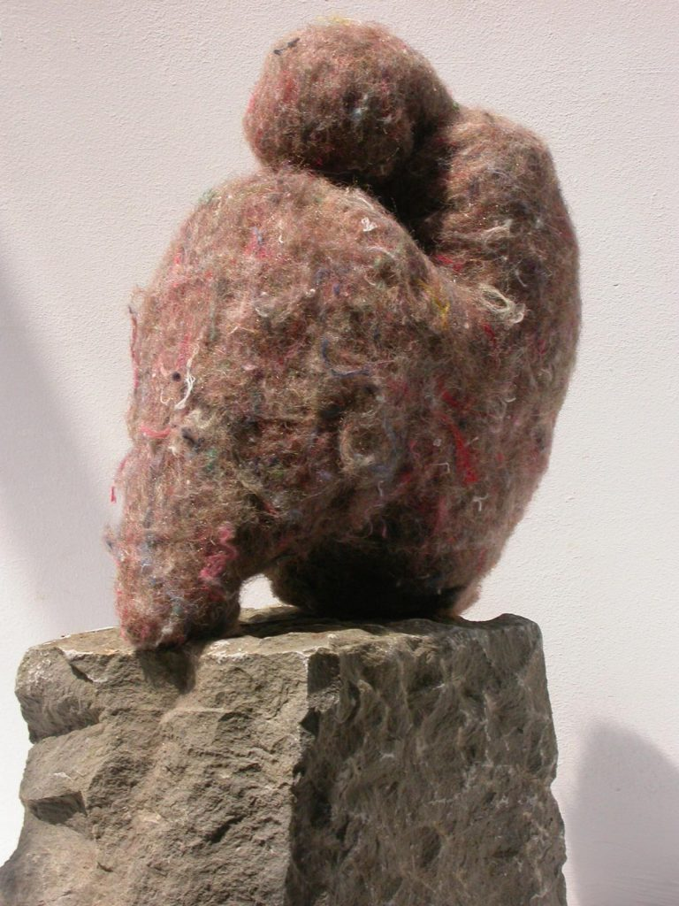
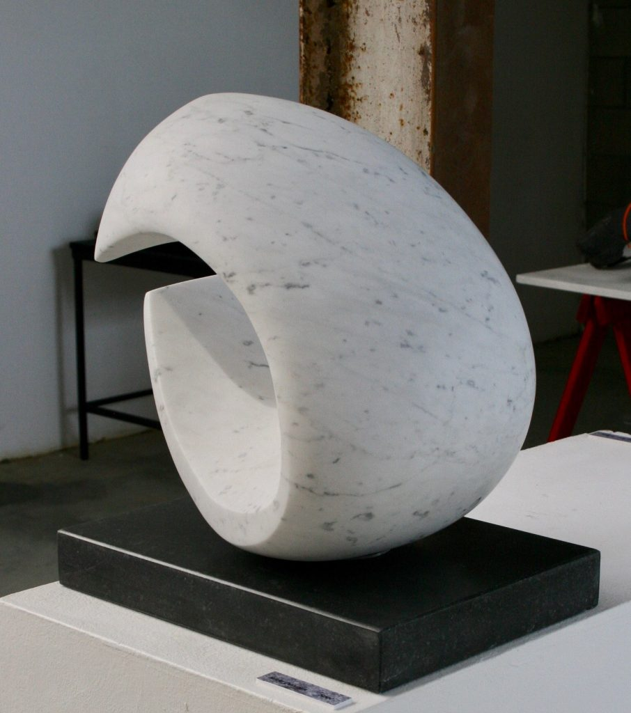
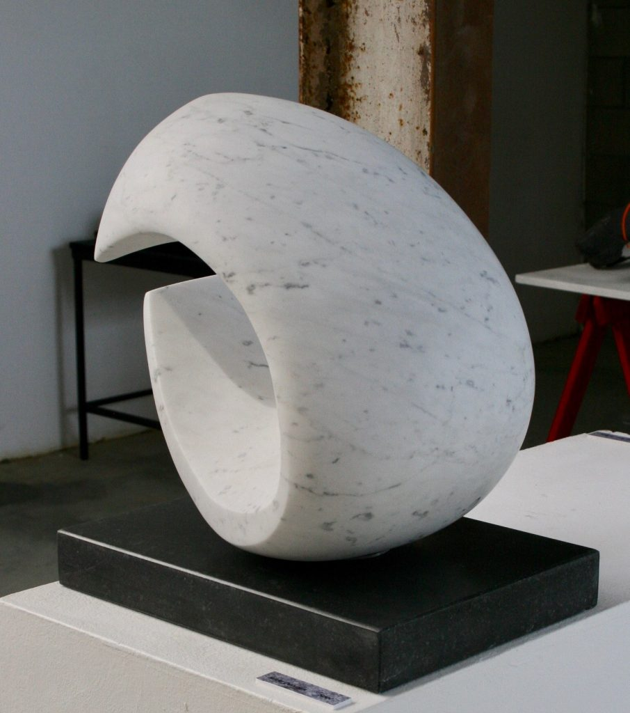
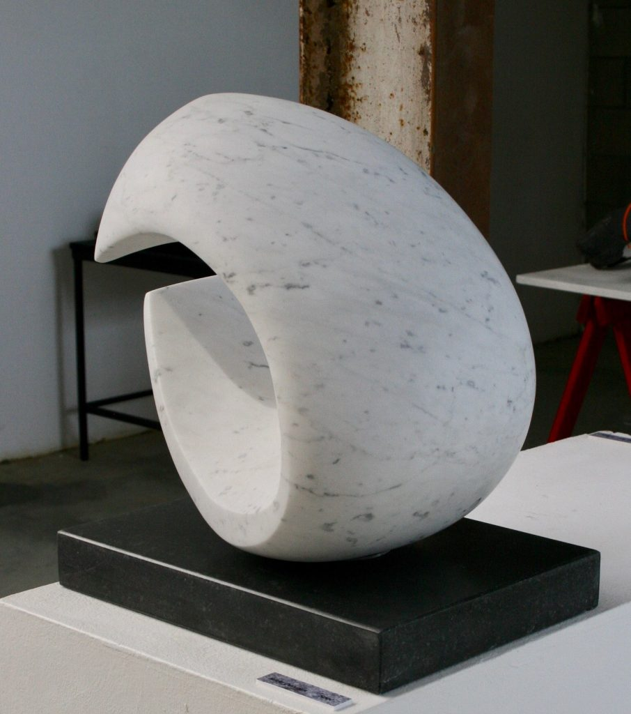

ATELIER IN DE KIJKER: BEELDHOUWEN EN RUIMTELIJKE KUNST
Neem een kijk in het atelier Beeldhouwen en ruimtelijke onder leiding van Werner Bossuyt
Deze opleiding bestaat uit twee belangrijke stadia, die naargelang de ontvankelijkheid , engagement en rijpheid van de leerling samenvallen met de twee cycli, nl. hogere graad (5 jaren) en specialisatiegraad (2 jaren).
Men zou kunnen stellen dat binnen deze opleiding in het eerste stadium we vooral proberen te herontdekken wat reeds ‘was’ vanuit het standpunt van de vormgever. In het tweede stadium wordt gezocht naar beeldende middelen omtrent zaken die er niet waren – bij de anderen – tot jij er mee op de proppen kwam.
In het eerste stadium hebben we vooral te maken met onze ervaringswereld, alles waar we iedere dag mee in aanraking komen, over ons verleden en heden die deze ervaringen (ver)kleuren,…
In het tweede stadium kunnen onze beelden refereren naar een werkelijkheid. Ze kunnen louter sculpturaal, monumentaal, literair of zelfs poëtisch zijn maar altijd blijven ze tastbaar, soms zelfs voelbaar zoals mijn arm als ik erin nijp om zeker te zijn of ik wel wakker ben.
Soms gaan ze verder en vervatten ze emoties, zijn ze bevragend en beklijvend.
Men kan stellen dat men binnen dit atelier de kans krijgt om opnieuw wakker te worden op het veld van de vanzelfsprekendheden om tot de ontdekking te komen dat ze dit niet meer hoeven te zijn.


 

